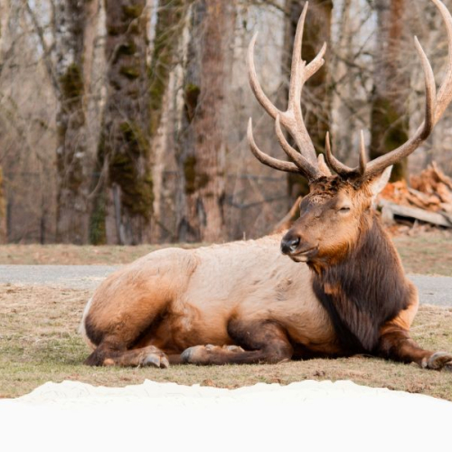
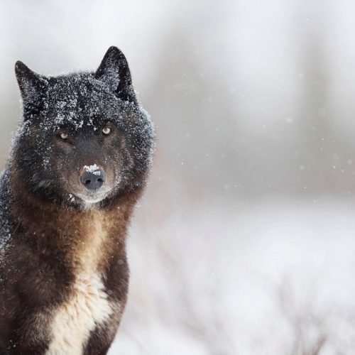
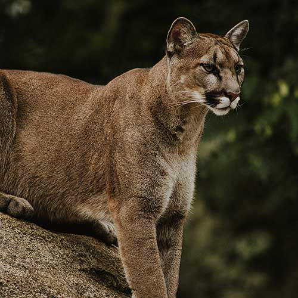
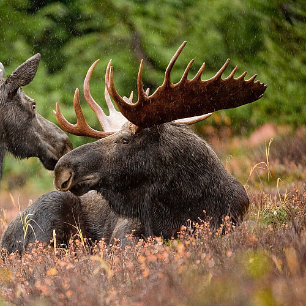

About the Crossing
The Banff Wildlife Crossing spans the Trans‐Canada Highway, allowing safe passage for bears, elk, wolves and more animals. Since its opening, wildlife mortality has dropped by over 80%.
What does it provide?
Vegetation Cover
Mimics natural habitat to encourage use. Animals that cross also benefit the ecosystem by biodiversity.
Sound Barriers
Reduces traffic noise for shy species. Especially important for smaller mammals. This allows ease of movement and reduces stress.
Monitoring Cameras
Tracks wildlife movement and behavior. Provides valuable data for conservation efforts, such as areas to develop more crossings, observations and snow tracks.
Who Uses It?
-
 Grizzly Bears
Grizzly Bears
-  Elk
-  Wolves
-  Cougars
-  Moose